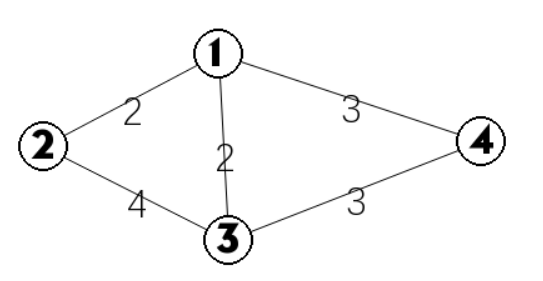
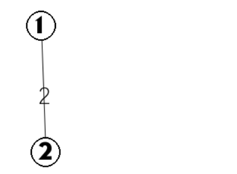
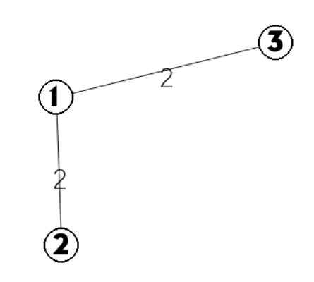
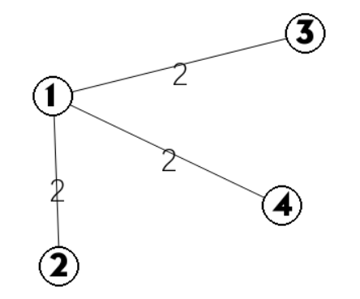

最小生成树
定义¶
（还记得这些定义吗？在阅读下列内容之前，请务必了解 图论基础 部分）
生成子图
生成树
最小生成树：边权和最小的生成树。
注意：只有连通图才有生成树，而对于非连通图，只能搞出生成森林。
Kruskal 算法¶
是一种常见并且好写的最小生成树算法，由 Kruskal 发明，基本思想是从小到大加入边，是个贪心算法。
证明¶
思路很简单，为了造出一棵最小生成树，我们从最小边权的边开始，按边权从小到大依次加入，如果某次加边产生了环，就扔掉这条边，直到加入了 条边，即形成了一棵树。
证明：使用归纳法，证明任何时候 K 算法选择的边集都被某棵 MST 所包含。
基础：对于算法刚开始时，显然成立（最小生成树存在）。
归纳：假设某时刻成立，当前边集为 ，令 为这棵 MST，考虑下一条加入的边 。
如果 属于 ，那么成立。
否则， 一定存在一个环，考虑这个环上不属于 的另一条边 （一定只有一条）。
首先， 的权值一定不会比 小，不然 会在 之前被选取。
然后， 的权值一定不会比 大，不然 就是一棵比 还优的生成树了。
所以， 包含了 ，并且也是一棵最小生成树，归纳成立。
实现¶
算法虽简单，但需要相应的数据结构来支持……
具体来说，维护一个森林，查询两个结点是否在同一棵树中，连接两棵树。
抽象一点地说，维护一堆 集合，查询两个元素是否属于同一集合，合并两个集合。
我们先啥都不管，假设已经实现了这个数据结构……
（伪代码）
1 2 3 4 | for (edge(u, v, len) in sorted(edges)) {
a = find_set(u), b = find_set(v);
if (a != b) merge(a, b);
}
|
find_set 调用 次，merge 调用 次。
排序的复杂度为 ，或 （假设能基数排序）。
那么让我们模拟一下：
先上数据：
1 2 3 4 5 6 | 4 5 1 2 2 1 3 2 1 4 3 2 3 4 3 4 3 |
图是这样的：

我们用 表示并查集， 表示排序后的结构体，下面是初始的状态：
：
| 编号 | 1 | 2 | 3 | 4 |
|---|---|---|---|---|
| 祖宗 | 1 | 2 | 3 | 4 |
：
| 编号 | 1 | 2 | 3 | 4 | 5 |
|---|---|---|---|---|---|
| start | 1 | 1 | 1 | 3 | 2 |
| to | 2 | 3 | 4 | 4 | 3 |
| cost | 2 | 2 | 3 | 3 | 4 |
首先我们发现 １,２ 是最小的，于是我们在 １ 与 ２ 建了一条边，由于这是第一次嘛，肯定不会出现环了，并且将 １ 和 ２ 加入一个集合：

：
| 编号 | 1 | 2 | 3 | 4 |
|---|---|---|---|---|
| 祖宗 | 1 | 1 | 3 | 4 |
接着发现 １,３，判断 ３ 和 １ 的是不是在一个集合？发现不是，于是将 ３ 加进去，并且标记 ３ 归属１。

：
| 编号 | 1 | 2 | 3 | 4 |
|---|---|---|---|---|
| 祖宗 | 1 | 1 | 1 | 4 |
发现 １,４，同时 １ 和 ４ 不在一个集合，于是将 ４ 加进去，标记 ４ 也归属 １。

| 编号 | 1 | 2 | 3 | 4 |
|---|---|---|---|---|
| 祖宗 | 1 | 1 | 1 | 1 |
此时，边数为点数 ，整个最小生成树完成了，代价是 。
“集合” 数据结构的一种实现¶
只要支持两个接口：find_set 和 merge。
我们先考虑暴力，直接维护每个元素属于哪个集合，以及每个集合有哪些元素。
find_set：
merge：，需要将一个集合中的所有元素移到另一个集合中。
于是考虑如何优化 merge。
一个简单的思路是，将较小的集合中所有元素移到较大的集合中。
复杂度是 。
那么总时间复杂度是多少呢？
我们换一个角度分析，考虑每个元素对每次合并操作的贡献。
很显然，一个元素所在的集合大小，在作为较小集合被合并一次之后，至少增加一倍。
所以一个元素所在的集合，最多有 次，作为较小集合被合并。
一共个元素，所以总时间复杂度为 。
这种做法或者思想，叫「启发式合并」。
总之我们得到了 的 Kruskal 算法。
Prim 算法¶
是另一种常见并且好写的最小生成树算法。 基本思想是从一个结点开始，不断加点（而不是 Kruskal 算法的加边）。
证明¶
从任意一个结点开始，将结点分成两类：已加入的，未加入的。
每次从未加入的结点中，找一个与已加入的结点之间边权最小值最小的结点。
然后将这个结点加入，并连上那条边权最小的边。
重复 次即可。
证明：还是说明在每一步，都存在一棵最小生成树包含已选边集。
基础：只有一个结点的时候，显然成立。
归纳：如果某一步成立，当前边集为 ，属于 这棵 MST，接下来要加入边 。
如果 属于 ，那么成立。
否则考虑 中环上另一条可以加入当前边集的边 。
首先， 的权值一定不小于 的权值，否则就会选择 而不是 了。
然后， 的权值一定不大于 的权值，否则 就是一棵更小的生成树了。
因此， 和 的权值相等， 也是一棵最小生成树，且包含了 。
实现¶
也是需要一些数据结构来支持。
具体来说，每次要选择距离最小的一个结点，以及用新的边更新其他结点的距离。
等等，这很像 Dijkstra 算法……
其实跟 Dijkstra 算法一样，只要一个堆来维护距离即可。
暴力：。
二叉堆：。
Fib 堆：。
（伪代码）
1 2 3 4 5 6 7 8 9 | H = new heap();
for (i = 1; i <= n; i++) H.insert(i, inf);
H.decrease_key(1, 0);
for (i = 1; i <= n; i++) {
u = H.delete_min();
for each edge(u, v, len) {
H.decrease_key(v, len);
}
}
|
注意：上述代码只是实现了 Prim 算法主体，如果要输出方案还需要记录额外的信息。
注意：在遍历边表 (u, v) 时，如果 v 已经被 delete，就无需 decrease key。
最小生成树小结¶
我们介绍了两种最小生成树的算法，各有特点。
然后我们来考虑这样一些问题。
一张图的最小生成树不一定是唯一的。
什么时候一定唯一？
考虑 Kruskal 算法，当每条边权都不一样时，一开始的排序只有一种方案，就一定唯一了。
那什么时候一定不唯一？
Kruskal 算法中的「集合」，能否进一步优化？
最小生成树题目¶
最小生成树的唯一性¶
考虑最小生成树的唯一性。如果一条边不在最小生成树的边集中，并且可以替换与其权值相同、并且在最小生成树边集的另一条边。那么，这个最小生成树就是不唯一的。
对于 Kruskal 算法，只要计算为当前权值的边可以放几条，实际放了几条，如果这两个值不一样，那么就说明这几条边与之前的边产生了一个环（这个环中至少有两条当前权值的边，否则根据并查集，这条边是不能放的），即最小生成树不唯一。
寻找权值与当前边相同的边，我们只需要记录头尾指针，用单调队列即可在（m 为边数）的时间复杂度里优秀解决这个问题（基本与原算法时间相同）。
例题：POJ 1679
1 2 3 4 5 6 7 8 9 10 11 12 13 14 15 16 17 18 19 20 21 22 23 24 25 26 27 28 29 30 31 32 33 34 35 36 37 38 39 40 41 42 43 44 45 46 47 48 49 50 51 52 53 54 55 56 57 58 59 60 61 62 63 64 65 66 67 68 69 70 71 72 | #include <algorithm> #include <cstdio> using namespace std; struct tree { int x,y,z; }; int f[100001]; tree a[100001]; int cmp(const tree a,const tree b) { return a.z<b.z; } int find(int x) { if (f[x]==x) return x; f[x]=find(f[x]); return f[x]; } int main() { int t; scanf("%d",&t); while (t--) { int n,m; scanf("%d%d",&n,&m); for (int i=1;i<=n;i++) f[i]=i; for (int i=1;i<=m;i++) scanf("%d%d%d",&a[i].x,&a[i].y,&a[i].z); sort(a+1,a+m+1,cmp); int num=0; int ans=0; int tail=0; int sum1=0; int sum2=0; int flag=1; for (int i=1;i<=m+1;i++) { if (i>tail) { if (sum1!=sum2) { flag=0;break; } sum1=0; for (int j=i;j<=m+1;j++) { if (a[j].z!=a[i].z) { tail=j-1;break; } if (find(a[j].x)!=find(a[j].y)) ++sum1; } sum2=0; } if (i>m) break; int x=find(a[i].x); int y=find(a[i].y); if (x!=y&&num!=n-1) { sum2++; num++; f[x]=f[y]; ans+=a[i].z; } } if (flag) printf("%d\n",ans); else printf("Not Unique!\n"); } return 0; } |
次小生成树¶
第 k 小生成树¶
build本页面最近更新：，更新历史
edit发现错误？想一起完善？ 在 GitHub 上编辑此页！
people本页面贡献者：
copyright本页面的全部内容在 CC BY-SA 4.0 和 SATA 协议之条款下提供，附加条款亦可能应用